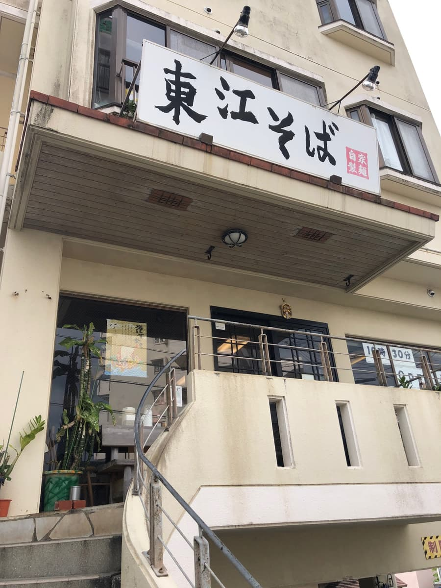
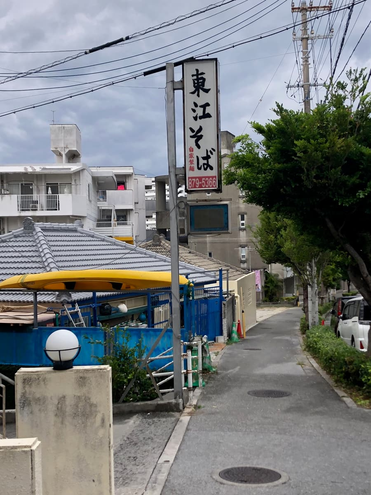
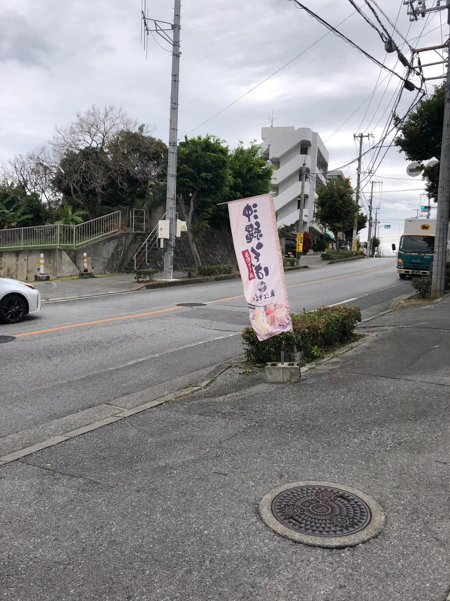
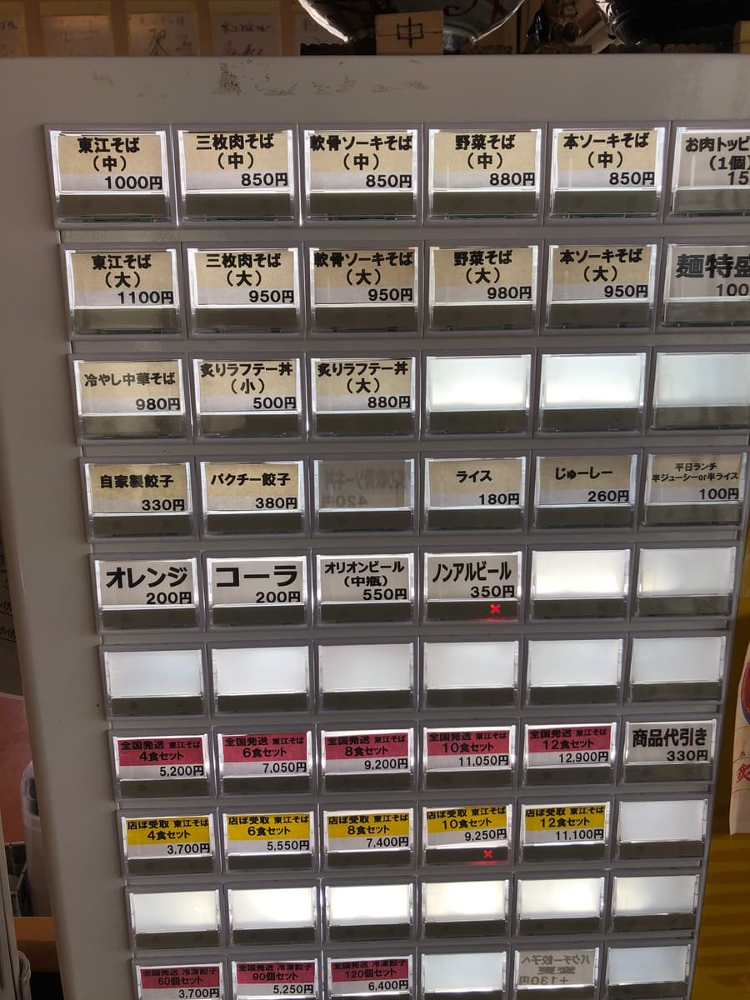
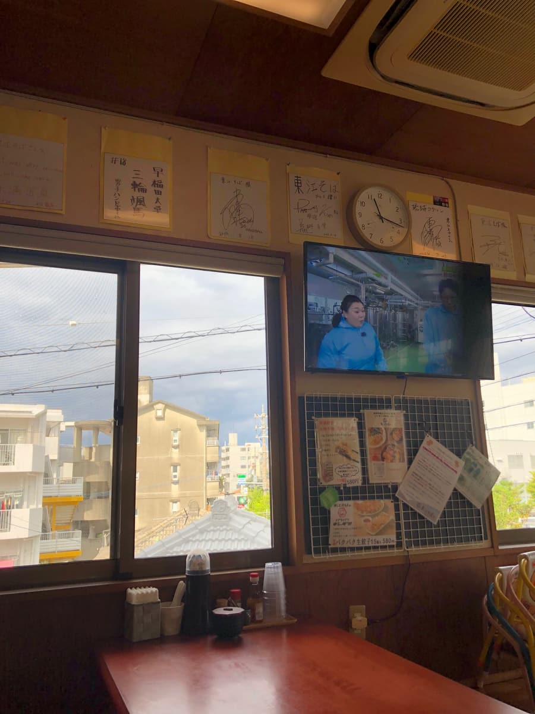
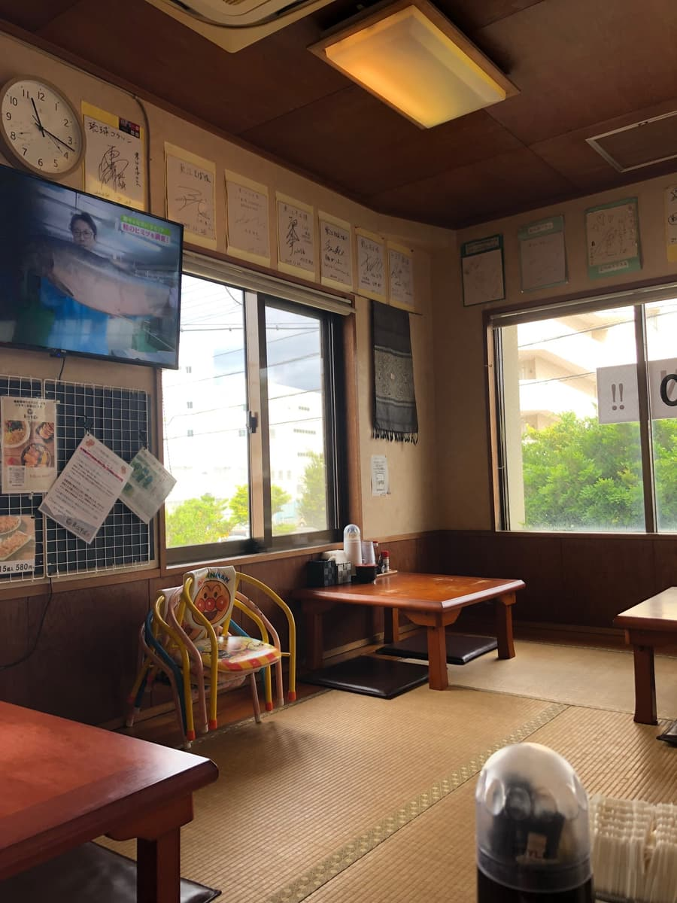
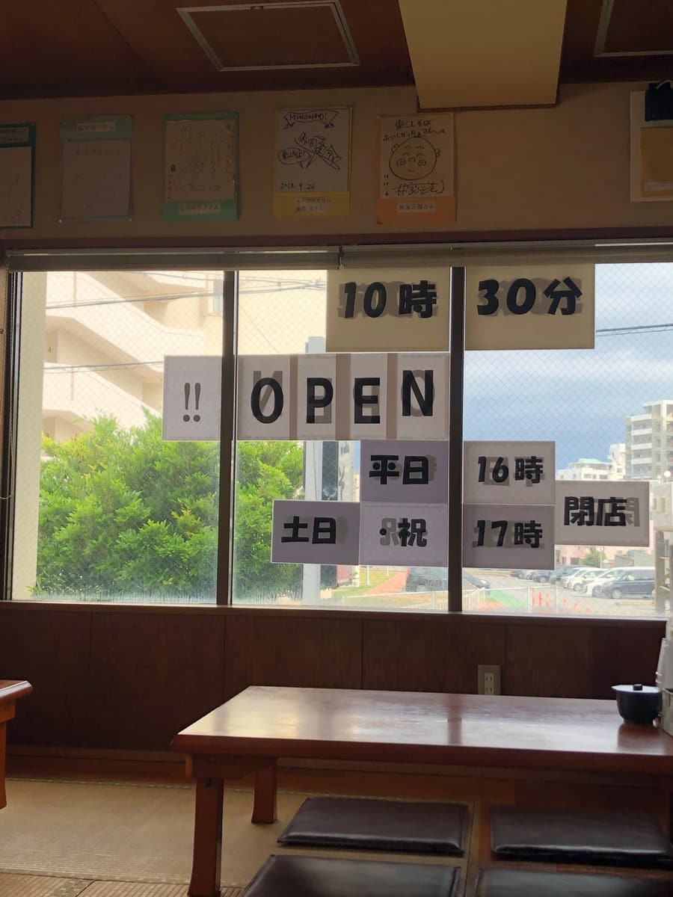
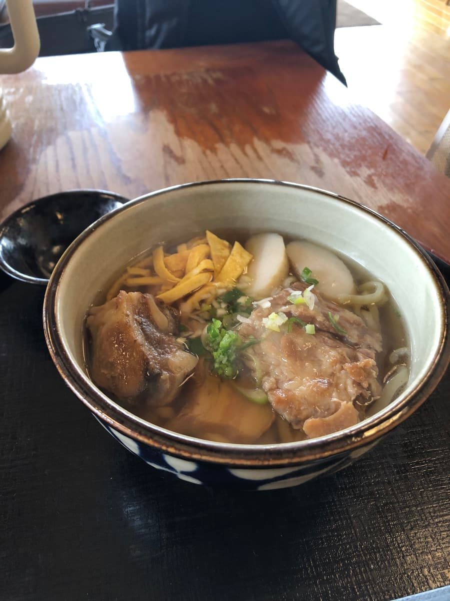
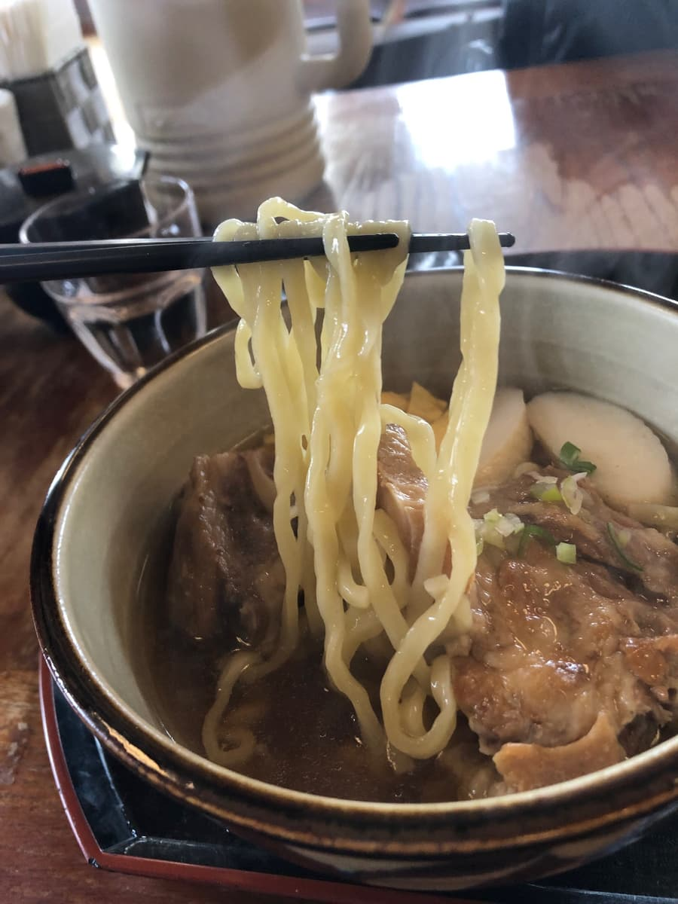

※이 글은 Claude Sonnet 4 AI로 작성한 것에 일부 내용을 덧붙였습니다.
2025년 1월에 먹으러 갔습니다😄 이번에는 우라소에시 짓차쿠에 있는 노포 명가 '아가리에 소바 우라소에 본점'에 다녀왔습니다 😊



가게는 국도 변 건물 2층에 있고, 커다란 흰 간판의 '아가리에 소바' 글자가 아주 눈에 띕니다 🏪 도로에는 분홍색 깃발도 서 있어서, 처음 가는 분도 헤맬 일은 없을 거예요. 계단을 올라 2층으로 향하는 구조로, 세월이 느껴지는 건물에서 노포의 품격이 느껴지네요. 평일 점심때였지만 주차장도 잘 확보되어 있어서 차로 가기에도 좋습니다 🚗

가게 안에 들어가면 먼저 식권 발매기가 눈에 들어옵니다 🎫 메뉴를 보면 아가리에 소바, 삼겹살 조림(산마이니쿠) 소바, 연골 돼지갈비(난코츠 소키) 소바, 채소 소바, 뼈 있는 돼지갈비(혼소키) 소바 등 다양한 종류가 갖춰져 있네요. 가격도 중 사이즈가 850엔~1000엔 정도로 양심적이고, 대 사이즈도 950엔~1100엔으로 합리적입니다. 이번에는 간판 메뉴인 '아가리에 소바(중)' 1000엔을 주문했습니다 💰
좌석은 다다미가 깔린 고아가리(좌식) 타입으로, 아주 차분한 분위기입니다 🏮 벽에는 많은 유명인의 사인이 걸려 있어서, 정말 인기 가게라는 걸 잘 알 수 있습니다. TV도 설치되어 있어서 느긋하게 식사를 즐길 수 있는 공간이네요. 창문으로 바깥 풍경도 보여서 개방감도 있습니다 🪟 영업시간은 평일 16시, 주말 17시까지이고, 10시 30분 오픈이라고 창문에 표시되어 있었습니다 🕐




잠시 후 나온 아가리에 소바는 보기만 해도 건더기 양이 굉장합니다!😋 아가리에 소바의 특징인 삼겹살 조림(산마이니쿠), 돼지갈비(소키), 연골 돼지갈비(난코츠 소키)가 모두 들어간 호화로운 한 그릇으로, 우선 국물부터 맛봤습니다. 가쓰오 육수가 확실하게 우러난 맑고 맛있는 국물이네요 🐟

면은 자가제 생면으로 중간 굵기의 꼬불꼬불한 타입이네요 🍝 쫄깃함은 그럭저럭이라는 느낌이고, 너무 부드럽지도 너무 딱딱하지도 않은 절묘한 삶기입니다. 꼬불꼬불한 면이 국물과 잘 어우러져서 일체감 있는 맛을 연출해 줍니다.
건더기로는 삼겹살 조림(산마이니쿠), 돼지갈비(소키), 연골 돼지갈비(난코츠 소키)라는 3종류의 돼지고기가 들어 있었습니다 🥩 모두 적당히 부드럽게 졸여져 있고, 간도 잘 배어 있습니다. 다만 돼지갈비(소키)와 삼겹살 조림(산마이니쿠)은 약간 힘줄 같은 질긴 식감이 남아 있는 부분도 있었습니다. 완전히 야들야들할 정도는 아니지만, 충분히 맛있게 먹을 수 있는 수준입니다. 연골 돼지갈비(난코츠 소키)는 특히 부드러워서, 뼈에서 살이 쉽게 떨어지는 상태까지 졸여져 있어 훌륭했네요 👏
아가리에 소바는 확실히 노포의 품격이 느껴지는 맛있는 오키나와 소바였습니다 🌟 특히 국물의 가쓰오 육수가 우러난 정도는 훌륭해서, 많은 유명인에게 사랑받는 이유를 잘 이해할 수 있습니다. 면도 자가제다운 정성스러운 솜씨이고, 건더기 양도 나무랄 데 없습니다. 다만 완벽하냐고 하면 조금 힘줄 같은 질긴 식감이 있는 부분이 마음에 걸리지만, 그래도 충분히 '그럭저럭 맛있는' 수준의 오키나와 소바네요 😊
평가(10.5점/15점): 무난하게 맛있는 느낌이네요. 우라소에시 짓차쿠의 국도에서 접근성이 좋습니다 . 아가리에 소바 우라소에 본점은 오키나와 소바계의 노포로서 많은 사람에게 계속 사랑받는 이유를 잘 알 수 있는 가게였습니다 🏆 가쓰오 육수가 우러난 고급스러운 국물과 푸짐한 건더기로 만족도 높은 한 그릇을 내줍니다. 오키나와 소바 초보자분도 베테랑분도 한 번쯤은 먹어 보셨으면 하는 가게네요. 우라소에 지역에서 오키나와 소바를 찾으신다면 꼭 아가리에 소바에 들러 보세요 👍
면: ★★★✬☆（3.5）
수프: ★★★✬☆（3.5）
토핑: ★★★✬☆（3.5）